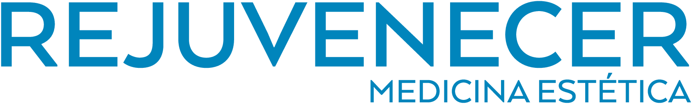
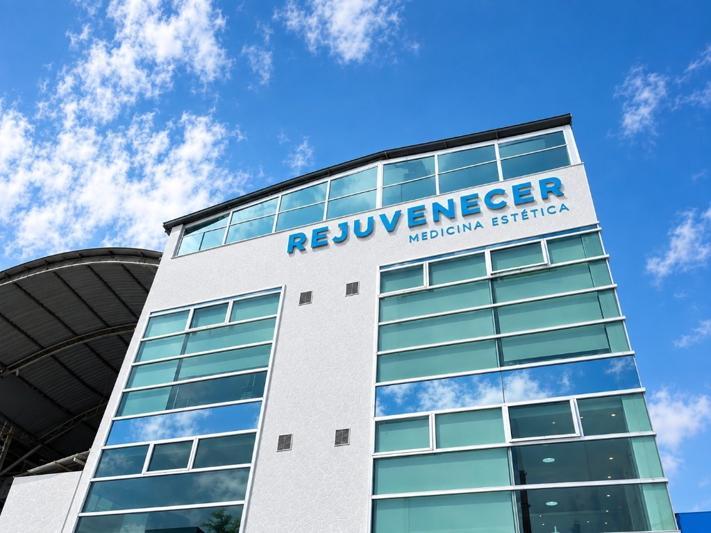

Caso 01 · Kennedy, Bogotá, Colombia
Clínica Estética Rejuvenecer
Campaña de rinomodelación y presencia local: 398 conversaciones iniciadas en 2 semanas y aprox. $3.500.000 COP en ventas reportadas.


Sede en Kennedy, Bogotá.Antes
Requerían abrir un canal activo y predecible de captación para tratamientos faciales de alto valor y consolidar su visibilidad en mapas locales.
Qué hicimos
Campaña de mensajes en Meta Ads para rinomodelación y optimización de presencia local en Google Business Profile, Apple Maps y Bing Places.
Resultados de campaña y reporte
Conversaciones y gasto acreditados directamente en Ads Manager ($1.255 COP/mensaje). Ventas y retorno (~7x) reportados por la administración de la clínica.
Su experiencia
Opinión verificable del negocio.
Testimonio público de Clínica Estética Rejuvenecer en Facebook.